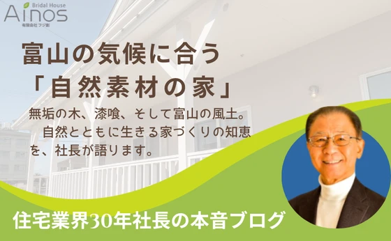

頭金なしでもマイホームは大丈夫？
後悔しないための現実的な判断基準 「家が欲しいけど、頭金がない...」 この悩み、実はかなり多いです。 結論から言うと、頭金なしでもマイホーム購入は可能です。 ただし、"誰でも安全"ではありません。 この記事では 頭金な
続きを読む →FUJISOU AINOS JOURNAL
家づくりのこと、暮らしのこと。
日々の想いを、お伝えします。
新しい記事から 2・40ページ
後悔しないための現実的な判断基準 「家が欲しいけど、頭金がない...」 この悩み、実はかなり多いです。 結論から言うと、頭金なしでもマイホーム購入は可能です。 ただし、"誰でも安全"ではありません。 この記事では 頭金な
続きを読む →
家づくりを考え始めたとき、多くの方が悩むのが 「住宅会社って何社くらい比較すればいいの？」 という問題です。 結論から言うと、 比較は「3社」がベストです。 今回はその理由と、失敗しない比較方法について分かりやすく解説し
続きを読む →
注文住宅はいくらかかる？ 家づくりの価格の考え方を分かりやすく解説 家づくりを考え始めたとき、多くの方が最初に気になるのが 「注文住宅はいくらかかるのか？」ということだと思います。 しかし住宅の価格は、土地・建物・設備・
続きを読む →
なぜ私はこの家づくりをしているのか 健康で長持ちする住まいを届けたい 家づくりは人生で一番大きな買い物です。 しかし住宅業界を長く見ていると、 「本当にお客様のための家づくりがされているのだろうか」 と疑問に感じることが
続きを読む →
Zoom相談が増えている理由 ここ数年、家づくりを考えているお客様の行動パターンが大きく変わってきています。 特に最近感じるのが「Zoomなどのオンライン相談の増加」です。 以前は 住宅展示場に行く 住宅会社に直接訪問す
続きを読む →
後悔しない家づくりのためのポイント 富山で家づくりを考え始めたとき、多くの方が最初に悩むのが 「何から始めればいいの？」ということです。 住宅展示場へ行くべきなのか、土地を探すべきなのか、住宅会社を探すべきなのか...。
続きを読む →
人間だれしも年を取ります。退職後の安心のご提案です。 今から準備しましょう。 新築自然素材戸建て賃貸 投資モデル ■ 投資コンセプト 中古再生ではなく 新築 × 自然素材 × 戸建て賃貸 で 「長期安定収益」を実現。 ■
続きを読む →
このまま進めて、本当に後悔しませんか？ その見積り - 本当に適正価格ですか？ 耐震は - 「安心」と言い切れますか？ 冬 - エアコン全開の家になりませんか？ 土地と間取り - ちぐはぐになっていませんか？ 家づくりで
続きを読む →
家づくりで後悔する人の共通点5選 富山市・高岡市で注文住宅をご検討中の方へ。 能登半島地震以降、「家は本当に大丈夫なのか？」という不安の声を多くいただくようになりました。 住宅は資産である前に、家族の命を守るシェルターで
続きを読む →
能登半島地震から学ぶ家づくりの本質 2024年元日に発生した能登半島地震。 この震災で私たちが改めて突きつけられた現実があります。 「住まいは財産である前に、命を守るシェルターである」 という事実です。 各種報道や調査に
続きを読む →
「そろそろアパートを出て、持ち家を考えたい」 「子どもも大きくなり、これからの暮らしを真剣に考えたい」 40歳代になると、こうしたご相談が一気に増えてきます。 そして実はこのタイミングこそ、 家づくりで一番大切なのは「建
続きを読む →
新築住宅でも空き巣被害は起きています。 「新築だから防犯は大丈夫」 実はこの考え方、とても危険です。 警察庁のデータでも、戸建住宅は空き巣被害の上位。しかも狙われやすいのは、 新興住宅地 周囲がまだ空き地の多い分譲地 共
続きを読む →家づくりは、多くの人にとって一生に一度の大きな買い物です。 にもかかわらず、 -間取りばかり考えていた -デザイン優先で性能を見ていなかった -住んでから「こんなはずじゃなかった」と気づいた という声は後を絶ちません。
続きを読む →
本当に暖かく、光熱費がかからない家の見極め方 富山で家づくりを考えると、 断熱性能は必ず話題になります。 「断熱等級７で最高値です」 「UA値も北海道仕様で安心です」 こうした説明を受ける方も多いでしょう。 しかし、富山
続きを読む →
お客様が住宅会社を決めるとき、ここだけは絶対に押さえておきたいこと ― 家の「本当の品質」を左右するのは誰が建てるか ― 家づくりを考え始めたとき、多くの方が 「どの住宅会社が安心なのか」 「ハウスメーカーと地元工務店、
続きを読む →
【2026年 新年のご挨拶】 家族の未来を支える「本当に良い家づくり」を、今年も よろしくお願いいたします。 あけましておめでとうございます。 富山県で自然素材を活かした注文住宅を手がけております、有限会社フジ創 代表の
続きを読む →
「家族の成長を考えた家づくり」10年後・20年後も後悔しない住まいとは？ はじめに｜「今ちょうどいい家」が将来もいい家とは限らない 家づくりを考えるとき、多くの方が 「今の家族構成」「今の生活スタイル」を基準に間取りや広
続きを読む →
私たちフジ創Ainosが考える「住宅を建てたい人が決断する瞬間」 家づくりを考え始めた多くの方が、こんな気持ちを抱えています。 「まだ決めきれない」 「本当にここで建てていいのだろうか」 それは決して優柔断だからではあり
続きを読む →
近年、日本全体で物価上昇が続き、富山でも食料品・光熱費・生活用品の値上げが止まりません。 「この先の家計が不安...」と感じる方も増えています。 こうしたインフレ時代にこそ見直したいのが、富山で家を建てる・買うという選択
続きを読む →
いつもフジ創をご利用いただき、誠にありがとうございます。 誠に勝手ながら、下記の期間を年末年始の休業とさせていただきます。 ■ 休業期間 2025年12月28日（日）〜 2026年1月4日（日） ■ 営業再開日 2026
続きを読む →
家づくりを考えるとき、「便利な間取り」は誰もが気になるポイントです。 しかし実際には、生活動線が悪い・収納が使いづらい・家事に時間がかかるといった失敗が後から発生しがちです。 この記事では、注文住宅会社として多くのお客様
続きを読む →
「長生きしたい」「健康に暮らしたい」---- そう願うなら、実は 家づくりが健康寿命に大きく影響する ことをご存じでしょうか？ 近年の研究では、住まいの環境が「睡眠の質」「免疫力」「ストレス」「血圧」「呼吸器疾患」など多
続きを読む →公開日：2025年11月15日｜カテゴリ：自然素材・注文住宅・選び方 自然素材の家は見た目も心地よさも魅力的ですが、建てたあとで「想像と違った」と感じる方もいます。多くの後悔は事前の確認不足で防げます。ここでは、自然素材
続きを読む →
はじめに：富山県で人気が高まる「自然素材の家」 ここ数年、富山県でも「自然素材の家」に注目が集まっています。 無垢の木の香りや漆喰の壁がつくるやさしい空気、そして家族の健康を守る安心感。 化学物質をできるだけ使わず、心と
続きを読む →